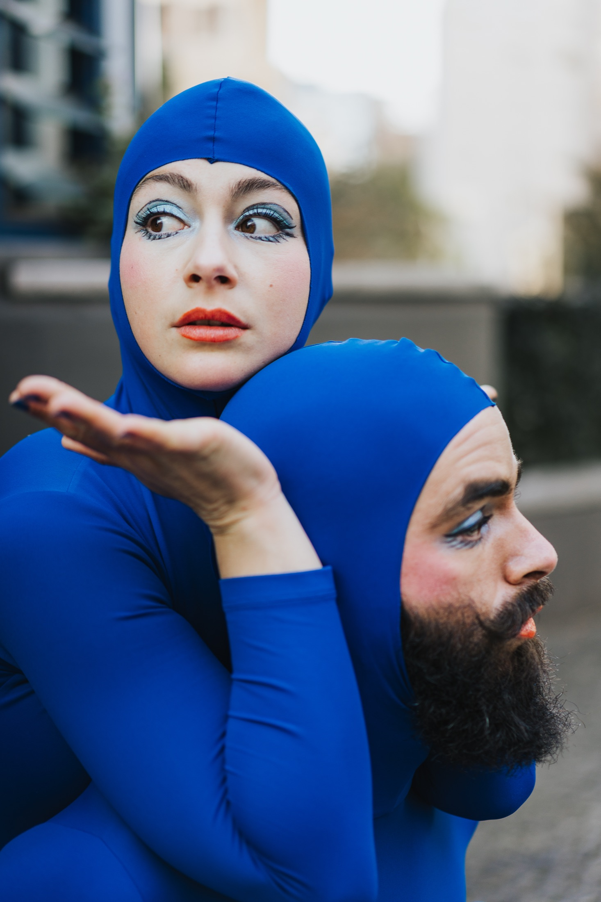
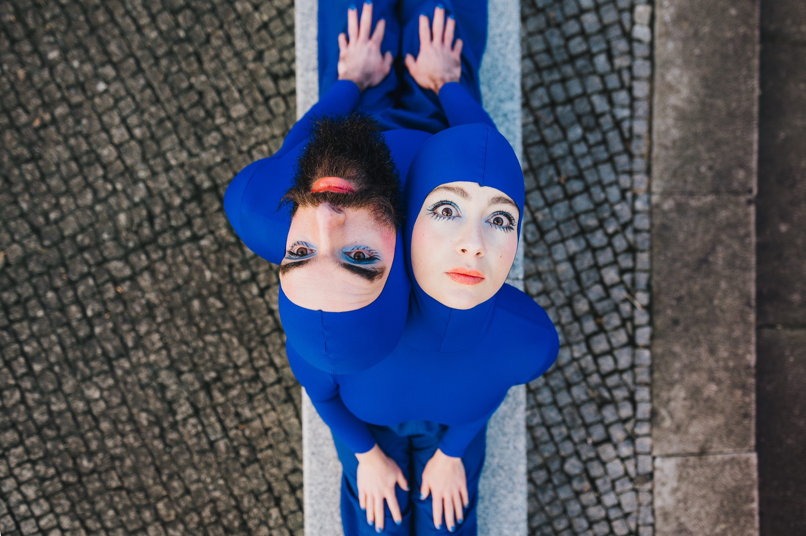
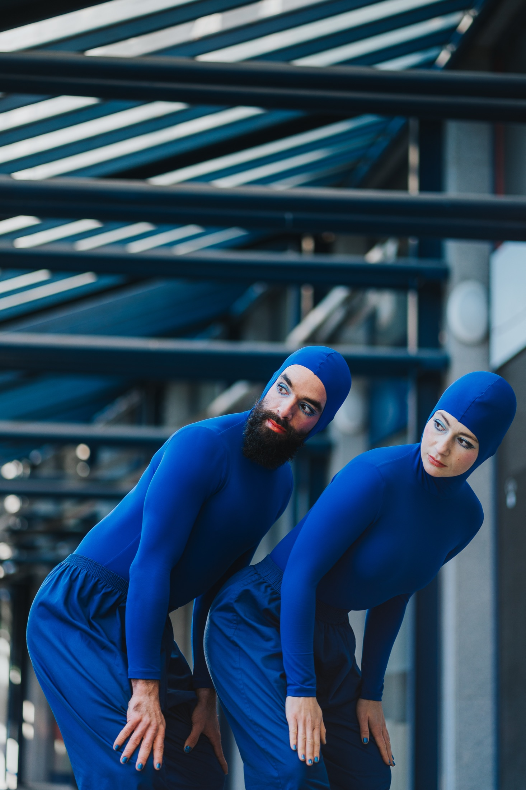

© Juliana Silva - Solar Studio
Blueprint is a contemporary dance piece that marks the second collaboration between Juliana Fernandes and Victor Gomes as co-creators and performers, based on the investigation and materialization of the following concepts: Queer spaces; Renaming reality; Reconstructing reality; Counter-architecture; Neutral/null space; Body as space; Space; Repurposing; Exhibition/display/installation; Space vs. place; Place; Non-place.
BLUEPRINT seeks to trigger new ways of perceiving these themes, leading the audience to question the reasons behind the intrinsic and often dogmatic conventions attached to them, namely the dichotomy established between the concepts of space and place.
Artistic direction - Co-creation and performance - Juliana Fernandes and Victor Gomes
Sound design - Juliana Fernandes and Victor Gomes
Lighting design and operation - Élio Moreira
Costumes - Susana Gateira and Cândida Meira
Recording and photographic support - Juliana Silva and Adam Ilyuk
Video Recording - Henrique Rocha
Residency Support - Casa Varela Pombal, Sekoia Performing Arts - Artists Shelter, Instável Choreographic Center
Co-production - Municipality of Pombal, Porto Municipal Theater, and Instável Choreographic Center
Financial Support GDA Foundation - Support for Dance and Theater Performances 2023
Acknowledgments - Diana Figueiredo, Ricardo Simões, Rita Tavares, Tânia Guerreiro, Rina Marques
Duration - 20 minutes (adaptable)
Trailer - vimeo.com/906329058
January 12 and 13, 2024 | Palcos Instáveis, Teatro do Campo Alegre – Teatro Municipal do Porto
September 7, 2024 | Teatro-Cine Pombal
November 16, 2024 | Teatro Municipal Sá de Miranda – Festival do Teatro 2024



© Juliana Silva - Solar Studio